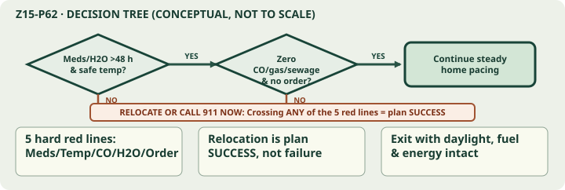

Z15-P62 · Disaster scenarios · New manuscript
Recognize firm thresholds when 30-day home resilience must yield to aid or exit
Eliminate dangerous "bunker mentality" by defining objective medical, utility, and environmental red lines that trigger orderly evacuation or 911.
When it applies · Extended multi-week disruptions across winter, summer, flood, or infrastructure crises.
Equipment · Pre-agreed written household red-line card signed/reviewed before disasters.

Actions
- Recognize immediate exit or emergency triggers: serious illness, fire, a suspected internal gas leak, a CO alarm, or an official evacuation order. Contact 911 from safety. For dwindling medication or medical power, use a reserve margin set with the clinician or equipment provider and seek help early.[D14, U17, U11, C07, T02]
- Treat evacuating to a powered hotel, relative's town, or county shelter as a SUCCESSFUL EXECUTION OF THE PLAN—never as a failure of self-reliance.[U17, D18]
- Leave while roads, daylight, fuel, and physical energy remain comfortably intact rather than waiting for all five red lines to converge simultaneously.[U17, D14]
Failure recognition · Stubbornly staying in a freezing dark house until prescriptions run out, pipes burst, and roads glaze over solid.[U17, D18]
Verify · Confirm all five written household exit red lines are posted in the outage binder and agreed upon by every adult beforehand.[U17, D18]
Stop or change course · Crossing ANY single objective red line activates orderly relocation or emergency-service assistance immediately.[U17, D14]
Evidence and editorial notes
- C07 · CPSC · Carbon Monoxide Fact Sheet (current web edition)
- Section: CO poisoning symptoms; what to do if suspected · Conditions: Suspected carbon monoxide exposure
Support: Escape to fresh air immediately and contact emergency services. Symptoms can include headache, dizziness, nausea and confusion.
Limitations: CO is colorless and odorless; symptoms mimic viral illness or altitude fatigue and can incapacitate sleepers without waking. · Conflicting evidence: None; aligns with CDC-CO.
Editorial note: Standard CO emergency stop condition across Z02 and Z03. · Specialist reviewer: Carbon monoxide safety and emergency medicine
Primary source · checked 2026-11-24 - D14 · FEMA / Ready.gov · Evacuation (current web edition)
- Section: Before, during and after evacuation · Conditions: Official evacuation or a preplanned, safely accessible departure
Support: Prepare a go-kit, routes, transport and a contact plan. Follow official routes and use the locally indicated registration or reunification channel.
Limitations: Shelter accessibility and animal accommodations require local and ADA guidance; no fixed national website is assumed. · Conflicting evidence: See A02 claim audit for boundaries.
Editorial note: Core evacuation execution and accountability evidence in Z15. · Specialist reviewer: Emergency management and transportation safety
Primary source · checked 2026-11-24 - D18 · FEMA / Ready.gov · Drought (current web edition)
- Section: Extended 30-Day Resilience, Supply Pacing, and Mutual Aid · Conditions: Multi-week regional disruption, supply-chain interruption, or prolonged utility recovery
Support: Manage 30-day household resilience through structured inventory tracking, conservative water/fuel/battery rationing, scheduled sanitation and hygiene routines, daily neighborhood wellness checks, and early transition to community distribution hubs before critical reserves run dry.
Limitations: Self-reliance plans must remain integrated with municipal/county relief and medical care—isolation without community check-ins increases mortality during prolonged disasters. · Conflicting evidence: None; frames 30-day scenarios realistically without doom-isolationism.
Editorial note: Anchors Z15 30-day operations, rationing logs, and community mutual-aid cards. · Specialist reviewer: Emergency management and community resilience
Primary source · checked 2026-11-24 - T02 · American Red Cross · First Aid Steps (current web edition)
- Section: First Aid Steps > Call 9-1-1 · Conditions: Lay emergency response to unresponsiveness, abnormal breathing or severe bleeding
Support: Activate EMS and get needed equipment. Follow dispatcher directions and act within training.
Limitations: Remote locations may delay EMS arrival, requiring sustained stabilization after activation. · Conflicting evidence: None; aligns with NPS-E.
Editorial note: Mandates early emergency activation and dispatcher adherence. · Specialist reviewer: EMS and wilderness medicine
Primary source · checked 2026-11-24 - U11 · U.S. DOT PHMSA · Pipeline Leak Recognition and What to Do (Current web edition)
- Section: What to DO; What Not to Do · Conditions: Suspected gas or pipeline leak
Support: Leave the affected area and call 911 and the provider from safety. Avoid spark sources and leave valve and restoration decisions to authorized responders.
Limitations: Do not transpose outdoor hazmat sheltering directions to a gas leak inside the dwelling. · Conflicting evidence: See A02 claim audit for boundaries.
Editorial note: Establishes strict utility-leak evacuation and licensed restoration gates. · Specialist reviewer: Gas utility safety and fire service
Primary source · checked 2026-11-25 - U17 · FEMA / Ready.gov · Evacuation (current web edition)
- Section: Household Evacuation Thresholds When Utilities Fail · Conditions: Uninhabitable indoor temperatures, sewage backup, persistent CO alarm, or structural/utility hazard
Support: Establish clear pre-agreed exit triggers to relocate to a warming center, hotel, or relatives BEFORE indoor freezing, carbon monoxide alarms, medical-device battery exhaustion, or impassable blizzard roads trap occupants.
Limitations: Waiting until indoor pipes burst or batteries hit zero removes safe travel options. · Conflicting evidence: None; aligns with T13 and E14.
Editorial note: Defines objective household abandonment thresholds in Z13. · Specialist reviewer: Emergency management and cold-weather operations
Primary source · checked 2026-11-24
Source lineage · FEMA Ready.gov Evacuation and Power Outages; new manuscript · Classification · New manuscript.